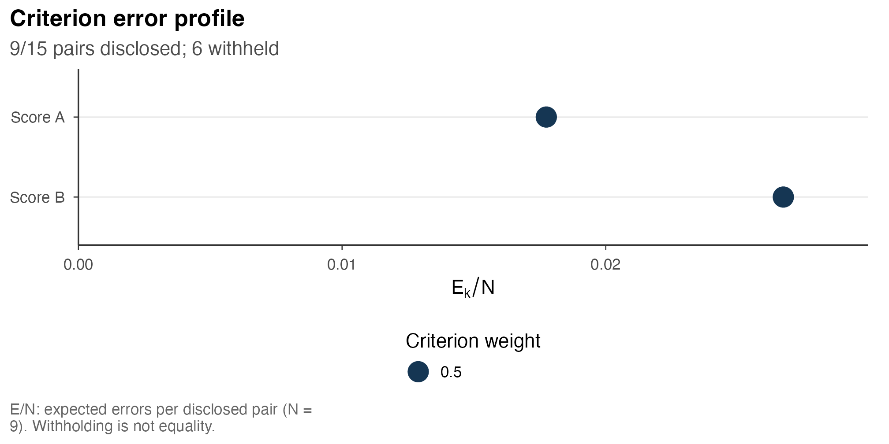
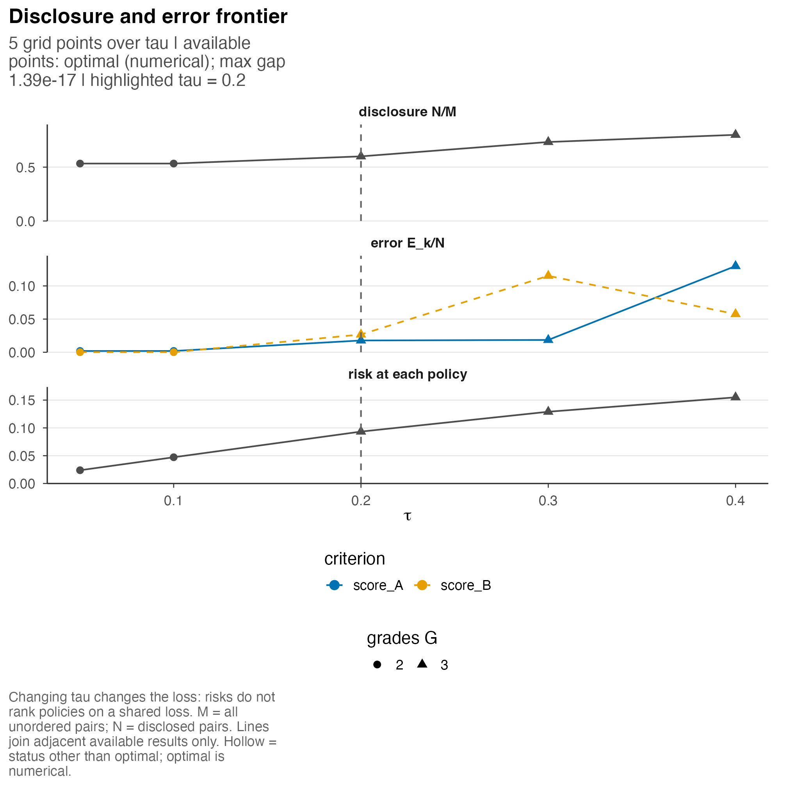
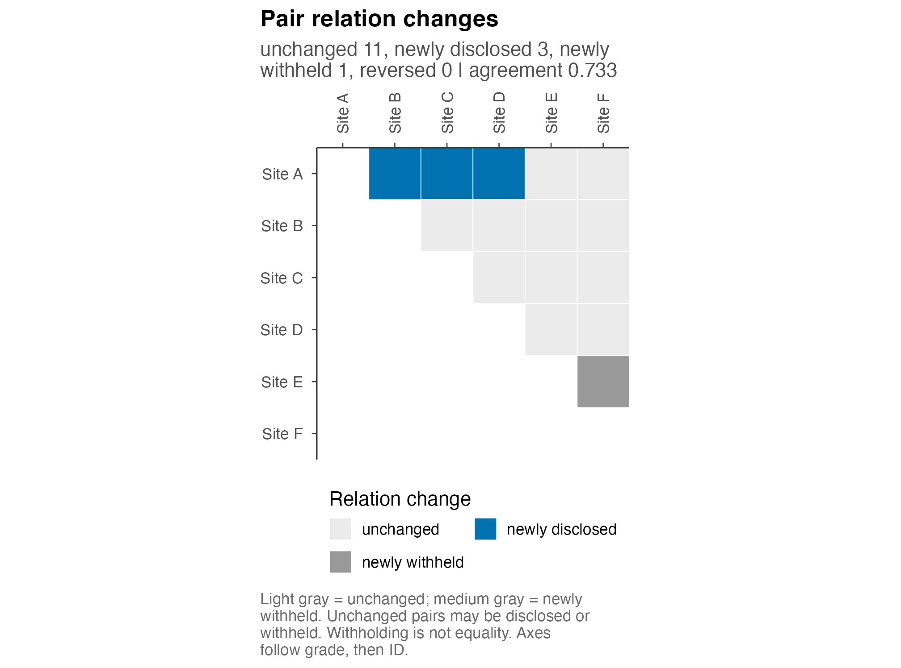
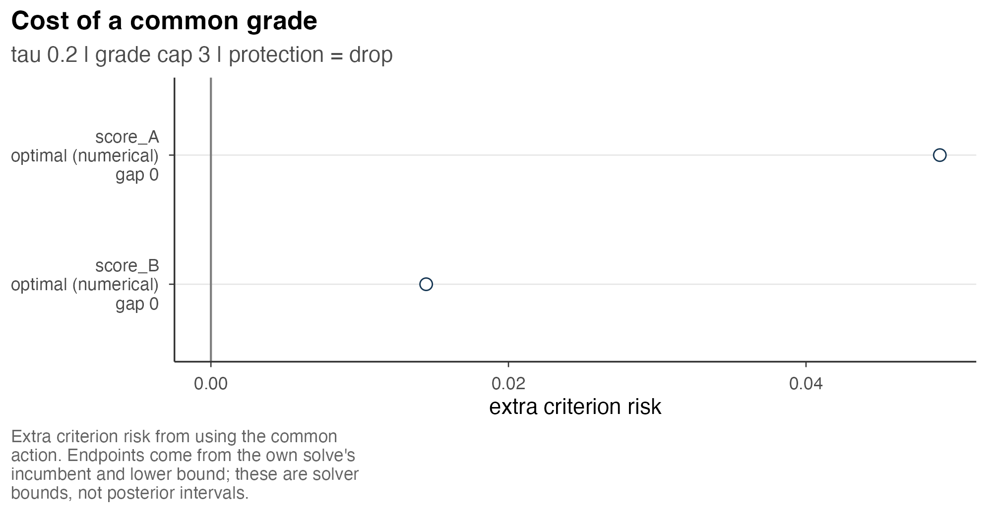

Figures and sensitivity analysis
Source:vignettes/a7-figures-sensitivity.Rmd
a7-figures-sensitivity.RmdGraphical summaries distinguish uncertainty in entity scores from the comparisons disclosed by a grading. Sensitivity analyses additionally examine how that grading changes with the withholding cost, criterion weights or grade cap.
We use the six fictional sites in Analysis with one or several criteria. Their scores have specified normal laws in illustrative standardized units, with standard deviation 0.2. Sites are independent, as are the scores within each site. These laws are not fitted to observations. Larger values receive higher priority on both criteria, and grade 1 has highest priority.
The reference analysis assigns equal criterion weights, permits at
most 3 grades and sets the withholding cost tau to 0.2. It
groups A through D together, followed by E and then F. The analyses and
settings sweeps were prepared using HiGHS. Rendering reads those
results, evaluates fixed alternatives and produces figures without an
optimizer. Optional recomputation calls are displayed without
execution.
Graphical representations
The seven plotting functions return ggplot objects based
on prepared results. A change in graphical representation therefore
leaves the selected grading unchanged.
| Quantity or comparison | Function and what it shows |
|---|---|
| Target estimates and uncertainty |
postrank_plot_report_card(): target means,
marginal intervals and grade membership. |
| Disclosed and withheld pair relations |
postrank_plot_relations(): selected
relations, or changes between two reports. |
| Error probability for a potential direction |
postrank_plot_pairwise():
criterion-specific probabilities of an error if the row is placed above
the column. |
| Criterion-specific expected errors |
postrank_plot_profile(): expected error
rates or risk for the selected grades. |
| Variation with the withholding cost |
postrank_plot_frontier(): disclosure,
error and risk along a prepared cost grid. |
| Evaluation of alternative grade vectors |
postrank_plot_compare(): reports evaluated
under a common loss, or their relation changes. |
| Criterion-specific cost of common grades |
postrank_plot_commonality(): extra
criterion risk relative to its own optimized report. |
Report cards and pairwise probabilities summarize the posterior, whereas relation maps represent selected reporting actions. A pale pairwise cell may support a direction whose comparison is withheld by the grading, and shared grades do not assert score equality. This distinction is illustrated in the chronic-absence example.
For large analyses, the displayed subset and its selection rule
should be specified. Report cards use entities and
max_rows, whereas pairwise plots use entities
and max_entities. Named entity_labels and
criterion_labels change display labels while retaining
identifiers and values. Setting ncol = 1 arranges criterion
panels vertically for narrow formats. Subset figures still refer to the
original report; they do not refit or optimize the subset.
Error rates and denominators
library(postrank)
sites <- pr_tutorial
entity_labels <- setNames(sites$units$label, sites$units$entity_id)
criterion_labels <- c(score_A = "Score A", score_B = "Score B")The common grading discloses 9 of 15 unordered pairs. Each criterion’s expected error count is divided by this same number of disclosed pairs in the default profile. The resulting rates can differ even under equal criterion weights.
profile_plot <- postrank_plot_profile(two, show = "E_over_N",
criterion_labels = criterion_labels)
profile_plot
Open full-size figureExpected wrong-direction errors per disclosed pair for the prepared common grading. Both criteria use the same disclosed comparisons; point size represents criterion weight.
profile_data <- postrank_plot_data(two, "profile")
profile_data[, c("criterion", "weight", "E", "E_over_N", "E_over_M")]
#> criterion weight E E_over_N E_over_M
#> 1 score_A 0.5 0.1596996 0.01774440 0.01064664
#> 2 score_B 0.5 0.2405960 0.02673289 0.01603973Expected errors per disclosed pair are 1.77% for score A and 2.67%
for score B. E_over_M instead uses all 15 pairs as its
denominator. Both quantities are posterior expectations rather than
observed error counts. Criterion risk additionally includes the cost of
the 6 withheld pairs and is displayed by show = "risk".
When every comparison is withheld, E/N is undefined and
the profile omits the point with an explanation. The absence of a valid
grading is likewise represented by its status. Unavailable frontier
results interrupt lines. Empty panels must therefore be interpreted from
these recorded states rather than as evidence of agreement or
precision.
Changes to reporting settings
The settings grid distinguishes three changes to the decision
problem. Changing tau alters the cost of withholding;
changing criterion weights alters the relative contribution of errors;
changing only the grade cap changes the admissible reports under a fixed
loss. The posterior score distributions remain fixed throughout. Weights
combine criterion-specific losses rather than defining a composite score
to be ranked.
grid <- postrank_settings_grid(two$settings,
tau = c(.1, .3), G_max = c(2L, 4L),
weights = list(
A_heavy = c(score_A = .8, score_B = .2),
B_heavy = c(score_A = .2, score_B = .8)
))The default grid varies one supplied axis at a time around the reference, giving 7 settings here rather than their full cross-product. The optional call below recomputes these reports from the same posterior input. Displayed results use the stored sweep’s grid and are matched by setting ID.
sensitivity <- postrank_sensitivity(two, grid, backend = "highs",
control = postrank_control(time_limit = 60, threads = 1, seed = 1304))| Setting | tau | Cap | Weights A/B | Grades | Disclosed | A errors/N | B errors/N |
|---|---|---|---|---|---|---|---|
| reference | 0.2 | 3 | 0.5/0.5 | 3 | 9 | 1.77% | 2.67% |
| tau=0.10 | 0.1 | 3 | 0.5/0.5 | 2 | 8 | 0.19% | 0.01% |
| tau=0.30 | 0.3 | 3 | 0.5/0.5 | 3 | 11 | 1.86% | 11.52% |
| G_max=2 | 0.2 | 2 | 0.5/0.5 | 2 | 8 | 0.19% | 0.01% |
| G_max=4 | 0.2 | 4 | 0.5/0.5 | 3 | 9 | 1.77% | 2.67% |
| A_heavy | 0.2 | 3 | 0.8/0.2 | 3 | 12 | 0.21% | 23.71% |
| B_heavy | 0.2 | 3 | 0.2/0.8 | 2 | 8 | 0.19% | 0.01% |
Assigning weight 0.8 to score A reduces its expected error proportion among disclosed pairs to 0.21%, while that for score B increases to 23.71%. This change follows from the specified relative importance of errors, with the precision of the score-A posterior held fixed. A weight also differs from a constraint limiting an error proportion.
Increasing the cap to 4 gives a report with 3 grades and changes 0 pair relations. An additional permitted grade need not be occupied. The effect depends on the posterior and loss rather than implying a fixed increase in the number of comparisons.
All these stored rows have numerical status optimal,
with maximum recorded risk gap 1.39e-17. 2 rows record a small
correction where a solver lower bound exceeded the evaluated action loss
within the objective tolerance. The bound source and warnings remain in
the result. These are optimization statements about the supplied
probabilities, not posterior intervals or guarantees about the score
model.
Withholding-cost path
The withholding-cost path holds criterion weights and the grade cap
fixed while varying tau. The optional call specifies the
prepared grid shown below.
frontier <- postrank_frontier(two, tau = c(.05, .1, .2, .3, .4),
backend = "highs",
control = postrank_control(time_limit = 60, threads = 1, seed = 1304))
frontier_plot <- postrank_plot_frontier(frontier, highlight = reference_tau)
frontier_plot
Open full-size figurePrepared withholding-cost path with fixed equal weights and a fixed grade cap. The dashed line marks the reference cost. Each risk panel value uses its own tau; the lines connect computed settings and are not interpolated grade reports.
The disclosure counts along the grid are 8, 8, 9, 11, 12. A greater
withholding cost favors additional disclosure. For exact optima under
the same posterior, weights and admissible reports, the disclosure count
is nondecreasing in tau. The finite grid may omit change
points, and numerical solver statuses alone do not establish the exact
property.
For score B, the error proportion increases from the reference to the next withholding cost, then decreases at the final cost as the groups change. Neither criterion-specific error proportion is required to be monotone. The risk panel evaluates a different loss at each cost; its increase cannot be interpreted as deterioration on a common accuracy scale. Lines connect evaluated settings for display and do not define fractional grades between them.
Nondecreasing disclosure counts do not require nested sets of
comparisons. At tau = 0.3, the report newly discloses 3
pairs and newly withholds 1 relative to the reference. The net increase
is 2, although one previously disclosed direction is removed.
higher_cost_fit <- sensitivity$fits[[hi_row]]
changes_plot <- postrank_plot_relations(two, higher_cost_fit,
entity_labels = entity_labels)
changes_plot
Open full-size figureRelation changes from the reference to the next larger withholding cost. Light gray means unchanged, including pairs withheld by both reports; medium gray marks a newly withheld pair.
Comparison under a common loss
Comparison of candidate reports requires evaluation under common posterior inputs, weights and withholding cost. The score-A-only grading provides an alternative action, but its original single-criterion risk is not directly comparable with the common report’s two-criterion risk.
comparison <- postrank_compare(two,
`Score A grades` = get_grades(one),
`Withhold all` = setNames(rep(1L, nrow(sites$units)), sites$units$entity_id),
baselines = character())| Report | Disclosed | Risk at reference settings | Within grade cap |
|---|---|---|---|
| Common grades | 9 | 0.0933 | TRUE |
| Score A grades | 12 | 0.1356 | TRUE |
| Withhold all | 0 | 0.2000 | TRUE |
Score A’s grades disclose 12 pairs and have common-loss risk 0.1356,
compared with 0.0933 for the common grading. Both respect the same cap.
This comparison concerns these fixed reports and the stated loss; it
does not establish that one score or weighting policy is scientifically
preferable. postrank_plot_compare(comparison) presents
these results graphically, retaining each action’s computation status
and scope. The relation view displays changes in pairwise decisions; it
does not compare the reports’ risks.
Criterion-specific cost of a common grading
postrank_commonality_cost() measures the additional
criterion-specific loss associated with a fixed common grading. Each
criterion is optimized separately at the same withholding cost and grade
cap, and its loss is compared with its loss under the common action. No
additional error-budget constraints are imposed here.
commonality <- postrank_commonality_cost(two, backend = "highs",
control = postrank_control(time_limit = 60, threads = 1, seed = 1304))
commonality_plot <- postrank_plot_commonality(commonality)
commonality_plot
Open full-size figureExtra criterion risk from using the common grading. The plotted endpoints are derived from each own-criterion solve’s incumbent and lower bound; they are not posterior uncertainty intervals.
For score A, criterion risk under the common report is 0.0906, compared with 0.0417 under its best found report, a difference of 0.0490. The corresponding additional risk for score B is 0.0145. These differences are in expected-loss units, including withholding costs, and do not measure changes in individual sites’ score uncertainty.
The figure retains uncertainty about numerical optimization separately. The common-action risk minus the own incumbent risk gives the lower endpoint (truncated at zero); subtracting the own solver lower bound gives the upper endpoint when available. A large gap in the criterion-specific optimization can therefore leave the additional loss imprecisely determined. Here the endpoints nearly coincide. Their width does not measure posterior variation, sampling uncertainty or model misspecification, and their interpretation inherits the solver bounds’ numerical limitations.
Figure data and export
postrank_plot_data() returns the stored values
underlying a figure. Standard ggplot2 layers can modify
presentation, with label and theme changes leaving those values
unchanged. The following code writes a PNG profile to a temporary
directory and, when the optional svglite package is
installed, an SVG version:
figure_dir <- tempfile("postrank-figures-")
dir.create(figure_dir)
ggplot2::ggsave(file.path(figure_dir, "criterion-profile.png"),
profile_plot, width = 7, height = 3.5, units = "in", dpi = 300)
if (requireNamespace("svglite", quietly = TRUE)) {
ggplot2::ggsave(file.path(figure_dir, "criterion-profile.svg"),
profile_plot, device = svglite::svglite,
width = 7, height = 3.5, units = "in")
}Figures intended for a report require a permanent output directory and inspection at the intended print size. Labels, denominators, selected entities and legends should remain legible, with captions identifying the target direction and distinguishing posterior intervals, solver bounds and withheld comparisons. Retaining the analysis object alongside the figure preserves its settings and computation status, as described in Reading and exporting results.
Computing grades and choosing settings describes how these settings alter the action families and objectives. Several criteria and competing goals gives the mathematical interpretation of the common-grade cost.